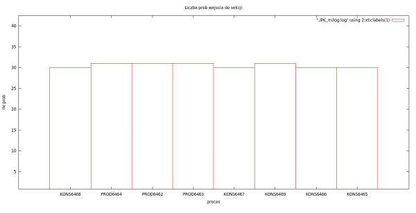
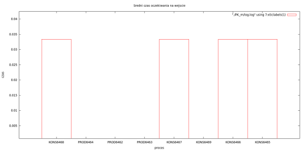
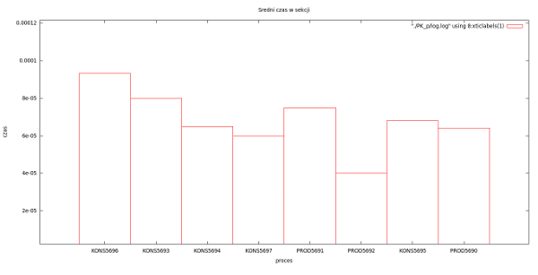
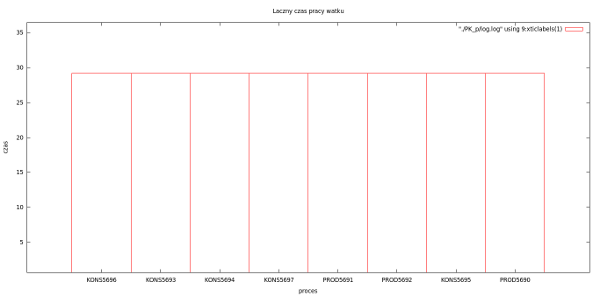
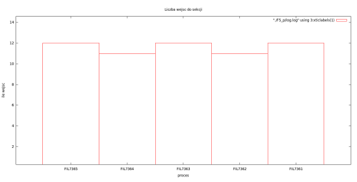
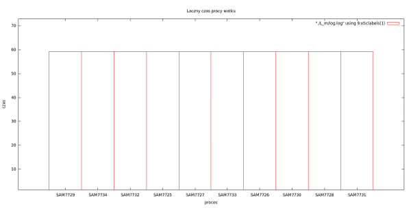

¦rodowisko do demonstracji algorytmów rozwi±zywania kilku wybranych mechanizmów synchronizacyjnych
Artur Orze³
II rok Informatyka EAIiE
wtorek 12.30
Spis tre¶ci
1. Temat projektu
2. Przedstawienie problemu i koncepcja rozwi±zania
3. Wykorzystywane mechanizmy synchronizacyjne i inne mechanizmy systemowe
4. Opis wybranych problemów synchronizacyjnych i ich rozwi±zañ
5. Wyniki przeprowadzonych testów i analiz
6. Opis uruchomienia i instalacji
7. Bibliografia
1. Temat projektu
Powrót do spisu tre¶ci
Napisaæ ¶rodowisko do demonstracji algorytmów rozwi±zywania kilku wybranych mechanizmów synchronizacyjnych. Przyk³adowe problemy: producenci/konsumenci, czytelnicy/pisarze, 5 filozofów, lotniskowiec, ¶pi±cy fryzjer itp.
2. Przedstawienie problemu i koncepcja rozwi±zania
Powrót do spisu tre¶ci
W ramach projektu, zgodnie z ustaleniami z prowadz±cym, zaimplementowana zosta³a ma³a biblioteka, u³atwiaj±ca korzystanie z niektórych mechanizmów synchronizacyjnych oraz zestaw funkcji umo¿liwiaj±cych mierzenie czasu spêdzonego w poszczególnych sekcjach kodu, w szczególno¶ci czasu oczekiwania na wej¶cie do sekcji krytycznej oraz czasu spêdzonego w tej sekcji. Ponadto zaimplementowanych zosta³o kilka rozwi±zañ wybranych, typowych problemów synchronizacyjnych. W zwi±zku z tym napisano dwa rozwi±zania dla ka¿dego z czterech problemów:
- producentów i konsumentów (w trzech wersjach: z wiêksz± liczb± producentów, konsumentów oraz gdy ich liczby s± równe),
- czytelników i pisarzy,
- piêciu filozofów,
- lotniskowca.
Ca³y projekt - zarówno biblioteka, jak i rozwi±zania wybranych problemów zosta³y napisane w jêzyku C.
Mechanizm analizy rozwi±zania zawiera proste w u¿ytkowaniu funkcje zapisuj±ce do plików (osobny plik dla ka¿dego w±tku/procesu, ka¿dy plik we wskazanym folderze) dane o punktach czasowych wa¿nych z punktu widzenia synchronizacji, tj.:
- oczekiwanie na wej¶cie do sekcji krytycznej
- wej¶cie do sekcji krytycznej
- wyj¶cie z sekcji krytycznej
Zdecydowano siê na porzucenie opakowywania wszystkich mechanizmów udostêpnianych przez system. W zamian zaimplementowane zosta³y tylko te, których u¿ytkowanie w typowych rozwi±zaniach jest przewidywalne, dziêki czemu wywo³anie kilku funkcji bêdzie mo¿na zast±piæ jednym. Wad± takiego rozwi±zania jest fakt, i¿ aby móc przeprowadziæ analizê rozwi±zania, potrzebne jest samodzielne dodanie wywo³añ funkcji loguj±cych. Zalet± za¶ - brak ograniczeñ na wybór mechanizmów synchronizacyjnych.
Po zakonczeniu testowania rozwi±zania konieczne jest wywo³anie specjalnej funkcji, która analizuje zawarto¶æ wszystkich plików z logami z podanego katalogu. Zadaniem tej funkcji jest czytanie tych plików linia po linii, wydobycie informacji o tym jakiego momentu czasowego i jakiego rodzaju zdarzenia dotyczy. Na tej podstawie wypisuje na standardowe wyj¶cie oraz do specjalnego pliku zbiorczego nastêpuj±ce informacje o poszczególnych procesach/w±tkach rozwi±zania:
- Nazwa okre¶laj±ca rodzaj w±tku/procesu podana na pocz±tku logowania
- Liczbê prób wej¶cia do sekcji krytycznej
- Liczbê wej¶æ do sekcji krytycznej
- Liczbê wyj¶æ z sekcji krytycznej
- £±czny czas oczekiwania na wej¶cie do sekcji
- £±czny czas spêdzony w sekcji
- ¦redni czas oczekiwania na wej¶cie do sekcji
- ¦redni czas spêdzony w sekcji
- £±czny czas pracy w±tku/procesu
Plik ze zbiorczymi danymi z analizy statystyk mo¿e zostaæ wykorzystany do stworzenia m. in. wykresów obrazuj±cych czasy dzia³ania i liczbê wykonañ poszczególnych partii kodu.
Ponadto w jêzyku Python napisano prosty skrypt, który wczytuje plik ze zbiorczymi danymi statystycznymi, a nastepnie dla poszczególnych kolumn rysuje w programie Gnuplot wykresy kolumnowe obrazuj±ce ró¿nice pomiêdzy poszczególnymi w±tkami/procesami w poszczególnych kwestiach. Skrypt o nazwie wykresy.py znajduje siê TUTAJ. Niestety, ze wzglêdu na brak czasu nie uda³o siê zaimplementowaæ równie¿ mo¿liwo¶ci programowego porównywania ró¿nych rozwi±zañ tego samego problemu - ta kwestia musi wiêc póki co pozostaæ w rêkach u¿ytkownika oprogramowania.
Dok³adna dokumentacja biblioteki znajduje siê TUTAJ. Rozwi±zania poszczególnych problemów synchronizacyjnych zostan± krótko omówione w dalszej czê¶ci dokumentacji.
3. Wykorzystywane mechanizmy synchronizacyjne i inne mechanizmy systemowe
Powrót do spisu tre¶ci
Generalnie, nie ma ograniczeñ na wykorzystywane mechanizmy w rozwi±zaniach problemów. Aby umo¿liwiæ analizê czasów oraz liczby wykonañ sekcji krytycznej, nale¿y samodzielnie wywo³ywaæ odpowiednie funkcje.
W prezentowanych przyk³adowych rozwi±zaniach wykorzystane zosta³y nastêpuj±ce mechanizmy synchronizacyjne/systemowe i inne:
- semafory komunikacji miêdzyprocesowej Systemu V, funkcje: ftok, semget, semctl, semop - wybrane ze wzglêdu na to, ¿e w osobistym odczuciu autora s± one bardziej elastyczne i wygodniejsze w u¿yciu, ale wymagaj± kilku operacji przed u¿yciem. W zwi±zku z tym zaimplementowano odpowiednie opakowania u³atwiaj±æe pracê z nimi.
- pamiêæ wspólna komunikacji miêdzyprocesowej Systemu V, funkcje: ftok, shmget, shmctl, shmat, shmdt - podobnie, jak wy¿ej.
- w±tki standardu POSIX, funkcje: pthread_create, pthread_attr_init, pthread_attr_setdetachstate, pthread_kill - wykorzystywane przy rozwi±zaniach opartych o w±tki. Tworzenie w±tku zosta³o opakowane ze wzglêdu na potrzebê tworzenia w±tków od³±czonych.
- mutexy oraz zmienne warunkowe standardu POSIX, funkcje: pthread_mutex_init, pthread_mutex_destroy, pthread_mutex_lock, pthread_mutex_unlock, pthread_cond_init, pthread_cond_destroy, pthread_cond_signal, pthread_cond_wait - aby móc stosowaæ rozwi±zania oparte o monitory
- blokady odczytu/zapisu dla problemu czytelników i pisarzy, funkcje: pthread_rwlock_init, pthread_rwlock_rdlock, pthread_rwlock_wrlock, pthread_rwlock_unlock, pthread_rwlock_destroy - specjalnie stworzony dla tego problemu mechanizm idealny do zaprezentowania jego dzia³ania
- funkcje dla danych w³asnych w±tków: pthread_key_create, pthread_key_delete, pthread_setspecific, pthread_getspecific
- funkcje systemowe do pracy z plikami: open, close, unlink, remove przy tworzeniu pliku z zapewnieniem, ¿e takowy nie istnieje, oraz do usuwania plików
- bardziej zaawansowane operacje na plikach i katalogach do pracy ze statystykami, funkcje: fopen, fprintf, fscanf, fclose, opendir, readdir, closedir, stat
- funkcje do pracy z tablicami znaków pomocne przy tworzeniu statystyk: sprintf, strcpy, strcmp, strcat, strlen, strtok
- pomiar czasu do zapisu momentu logowania: gettimeofday
- sygnaly do koñczenia dzia³ania programów: signal, sigprocmask, sigfillset, sigdelset, sigsuspend, kill
- funkcja pobieraj±ca TID w±tku/procesu oraz PID procesu: syscall, getpid
- mechanizm elipsy przy tworzeniu semaforów: va_start, va_arg, va_end
Dla ka¿dego z mechanizmów powsta³y odpowiednie struktury danych lub te¿ aliasy dla nazw typów (s± krótsze i kompatybilne z ca³± bibliotek± pod wzglêdem jêzyka).
Ze wzglêdu na mnogo¶æ operacji potrzebn± przy rozpoczêciu korzystania z semaforów i pamiêci wspólnej IPC Systemu V zdecydowano o implementacji funkcji wykonuj±cych wszelkie potrzebne operacje zarówno przy tworzeniu jak i usuwaniu dla typowych zastosowañ za programistê. Dziêki temu, przy wywo³aniu funkcji tworz±cej zestaw semaforów mo¿liwa jest natychmiastowa inicjalizacja ich warto¶ci, a tak¿e zmiana ich warto¶ci i usuniêcie/od³±czenie zbioru semaforów za pomoc± funkcji z biblioteki. W przypadku tworzenia pamiêci wspólnej, mo¿liwe jest natychmiastowe pod³±czenie, za¶ w przypadku jej zwalniania - równie¿ usuniêcie, w zale¿no¶ci od warto¶ci jednego z parametrów. Ponadto zaimplementowana zosta³a mo¿liwo¶æ tworzenia w±tku od³±czonego bez konieczno¶ci wywo³ywania dodatkowych funkcji samemu.
4. Opis wybranych problemów i ich rozwi±zañ
Powrót do spisu tre¶ci
Zaimplementowane rozwi±zania s± ogólnie znane, przedstawione w ksi±¿ce Programowanie wspó³bie¿ne i rozproszone..., a ponadto nie s± one g³ównym celem tego projektu, st±d zdecydowano siê pomin±æ szczegó³owe opisy rozwi±zañ, a jedynie przedstawiæ ich symboliczn± ideê. W zamian, w nastêpnym rozdziale przedstawione zostan± wykresy powsta³e wskutek analizy napisanych rozwi±zañ z wykorzystaniem wspomnianego skryptu.
a) Problem producentów i konsumentów.
Cytuj±c Wikipediê: "W problemie wystêpuj± dwa rodzaje procesów: producent i konsument, którzy dziel± wspólny zasób - bufor dla produkowanych (konsumowanych) jednostek. Zadaniem producenta jest wytworzenie produktu, umieszczenie go w buforze i rozpoczêcie pracy od nowa. W tym samym czasie konsument ma pobraæ produkt z bufora. Problemem jest taka synchronizacja procesów, ¿eby producent nie dodawa³ nowych jednostek gdy bufor jest pe³ny, a konsument nie pobiera³ gdy bufor jest pusty.
Rozwi±zaniem dla producenta jest u¶pienie procesu w momencie gdy bufor jest pe³ny. Pierwszy konsument, który pobierze element z bufora budzi proces producenta, który uzupe³nia bufor. W analogiczny sposób usypiany jest konsument próbuj±cy pobraæ z pustego bufora."
Zaimplementowane rozwi±zania bêd± poprawne dla przypadku, gdy bufor ma ograniczony rozmiar, dla dowolnej liczby producentów i konsumentów. Rozwi±zania:
- na procesach, z wykorzystaniem semaforów wskazuj±cych czy s± wolne/pe³ne miejsca w buforze, oraz pamiêci wspólnej jako bufora
- PK_p_a.c - rozwi±zanie dla 3 producentów i 5 konsumentów
- PK_p_b.c - rozwi±zanie dla 5 producentów i 3 konsumentów
- PK_p_c.c - rozwi±zanie dla 4 producentów i 4 konsumentów
- na w±tkach, za pomoc± mechanizmu monitorów (mutexy i zmienne warunkowe) dla grup producentów i konsumentów
- PK_m_a.c - rozwi±zanie dla 3 producentów i 5 konsumentów
- PK_m_b.c - rozwi±zanie dla 5 producentów i 3 konsumentów
- PK_m_c.c - rozwi±zanie dla 4 producentów i 4 konsumentów
b) Problem czytelników i pisarzy.
Cytuj±c Wikipediê: "W problemie czytelników i pisarzy zasób jest dzielony pomiêdzy dwie grupy procesów: czytelnicy - wszystkie procesy niedokonuj±ce zmian w zasobie, pisarze - pozosta³e procesy. Jednoczesny dostêp do zasobu mo¿e uzyskaæ dowolna liczba czytelników. Pisarz mo¿e otrzymaæ tylko dostêp wy³±czny. Równocze¶nie z pisarzem dostêpu do zasobu nie mo¿e otrzymaæ ani inny pisarz, ani czytelnik, gdy¿ mog³oby to spowodowaæ b³êdy."
Zaimplementowane rozwi±zania oparte s± o mechanizm blokad odczytu/zapisu. Rozwi±zania:
- na procesach, z wykorzystaniem semaforów wskazuj±cych czy s± wolne miejsca w czytelni, do wzajemnego wykluczania pisarzy oraz jako przedsionek dla pisarzy, oraz pamiêci wspólnej jako obiektu chronionego
- CP_p.c - rozwi±zanie dla 5 czytelników i 3 pisarzy
- na w±tkach, za pomoc± blokady odczytu/zapisu - mechanizmu stworzonego specjalnie na potrzeby tego problemu
- CP_m.c - rozwi±zanie dla 5 czytelników i 3 pisarzy
c) Problem piêciu filozofów.
Cytuj±c Wikipediê: Piêciu filozofów siedzi przy stole i ka¿dy wykonuje jedn± z dwóch czynno¶ci - albo je, albo rozmy¶la. Stó³ jest okr±g³y, przed ka¿dym z nich znajduje siê miska ze spaghetti, a pomiêdzy ka¿d± s±siaduj±c± par± filozofów le¿y widelec, a wiêc ka¿da osoba ma przy sobie dwie sztuki - po swojej lewej i prawej stronie. Poniewa¿ jedzenie potrawy jest trudne przy u¿yciu jednego widelca, zak³ada siê, ¿e ka¿dy filozof korzysta z dwóch. Dodatkowo nie ma mo¿liwo¶ci skorzystania z widelca, który nie znajduje siê bezpo¶rednio przed dan± osob±. roblem ucztuj±cych filozofów jest czasami przedstawiany przy u¿yciu ry¿u, który musi byæ jedzony dwiema pa³eczkami, co lepiej obrazuje sytuacjê. Filozofowie nigdy nie rozmawiaj± ze sob±, co stwarza zagro¿enie zakleszczenia w sytuacji, gdy ka¿dy z nich zabierze lewy widelec i bêdzie czeka³ na prawy (lub na odwrót).
Zaimplementowane rozwi±zania bêd± dzia³aæ poprawnie, w wersji z lokajem. Rozwi±zania:
- na procesach, z wykorzystaniem semaforów jako widelcy, a tak¿e jeden jako lokaj
- na w±tkach, za pomoc± monitora na widelce, oraz dodatkowego monitora bêd±cego lokajem
d) Lotniskowiec.
Cytuj±c ksi±¿kê Programowanie wspó³bie¿ne i rozproszone...: "Lotniskowiec ma pok³ad o pojemno¶ci N samolotów oraz pas startowy. Pas startowy jest konieczny do startowania i l±dowania samolotów, a mo¿e z niego korzystaæ w danej chwili tylko jeden samolot. Gdy liczba samolotów na lotniskowcu jest mniejsza ni¿ K (0 < K ≤ N), priorytet w dostêpie do pasa startowego maj± samoloty l±duj±ce, w przeciwnym razie startuj±ce. (...) Samolotów mo¿e byæ wiêcej ni¿ N, wówczas ich czê¶æ jest zawsze w powietrzu."
Rozwi±zania:
- na procesach, z wykorzystaniem semaforów wstrzymuj±cych samoloty startuj±ce i l±duj±ce oraz chroni±ce pamiêæ wspóln±
- L_p.c - rozwi±zanie z 10 samolotami, 10 miejscami na lotniskowcu oraz sta³± K = 5
- na w±tkach, za pomoc± monitora chroni±cego dostêpu do lotniskowca (odpowiedni mutex oraz zmienne warunkowe dla chc±cych startowaæ i l±dowaæ)
- L_m.c - rozwi±zanie z 10 samolotami, 10 miejscami na lotniskowcu oraz sta³± K = 5
5. Wyniki przeprowadzonych testów i analiz
Powrót do spisu tre¶ci
W wyniku uruchomienia programu pod k±tem przeprowadzenia analizy, po wys³aniu sygna³u SIGINT, na ekranie wypisane zostan± informacje o poszczególnych w±tkach/procesach. Przyk³adowy wydruk wygl±da nastêpuj±co:
Za¶ zawarto¶æ pliku log.log po wykonaniu jednego z rozwi±zañ wygl±da tak:
Plik ten mo¿na wykorzystaæ do wygenerowania wykresów za pomoc± do³±czonego skryptu.
Dla przyk³adowych rozwi±zañ wygenerowano w³a¶nie takie wykresy - s± one przedstawione parami: po lewej znajduj± siê wykresy odpowiadaj±ce rozwi±zaniom opartym na procesach i semaforach/pamiêci wspólnej, za¶ po prawej wykresy dla rozwi±zañ wielow±tkowych na monitorach/blokadach odczytu/zapisu.
a) Problem producentów i konsumentów - 3 producentów i 5 konsumentów
Liczba prób wej¶cia do sekcji krytycznej

Liczba wej¶æ do sekcji krytycznej
Liczba wyj¶æ z sekcji krytycznej
£±czny czas oczekiwania na wej¶cie do sekcji krytycznej
£±czny czas pracy w sekcji krytycznej
¦redni czas oczekiwania na wej¶cie do sekcji krytycznej

¦redni czas pracy w sekcji krytycznej

£±czny czas pracy w±tku

Szczególnie dla rozwi±zania na procesach (dla wykresów czasów oczekiwania równie¿ i dla rozwi±zania wielow±tkowego) zauwa¿yæ mo¿na ³atwo, ¿e ze wzglêdu na wiêksz± liczbê konsumentów, producenci praktycznie nie musz± czekaæ na dostêp do sekcji krytycznej, za¶ konsumenci - tak. W rozwi±zaniu wielow±tkowym nie widaæ jednak tego a¿ tak bardzo - co prawda czas oczekiwania jest znacz±co wiêkszy, jednak liczba wej¶æ do sekcji jest niemal taka sama, jak dla producentów - mo¿e to ¶wiadczyæ o m. in. b³êdnej implementacji tego rozwi±zania lub po prostu wynikaæ z takiej natury rozwi±zania. Na uwagê zas³uguje jednak fakt du¿o szybszego dzia³ania w±tków w porównaniu z procesami przy podobnej liczbie wej¶æ do sekcji i ³±cznym czasie dzia³ania - czasy oczekiwania s± do kilku razy krótsze.
b) Problem producentów i konsumentów - 5 producentów i 3 konsumentów
Liczba prób wej¶cia do sekcji krytycznej
Liczba wej¶æ do sekcji krytycznej
Liczba wyj¶æ z sekcji krytycznej
£±czny czas oczekiwania na wej¶cie do sekcji krytycznej
£±czny czas pracy w sekcji krytycznej
¦redni czas oczekiwania na wej¶cie do sekcji krytycznej
¦redni czas pracy w sekcji krytycznej
£±czny czas pracy w±tku

Podobnie jak poprzednio, ale na korzy¶æ konsumentów przemawiaj± czasy oczekiwania na wej¶cie do sekcji krytycznej - producenci szyciej produkuj±, ni¿ konsumenci s± w stanie konsumowaæ produkty. I znów w±tki dzia³a szybciej - osi±gniêto mniejszy czas oczekiwania na wej¶cie do sekcji.
c) Problem producentów i konsumentów - 4 producentów i 4 konsumentów
Liczba prób wej¶cia do sekcji krytycznej
Liczba wej¶æ do sekcji krytycznej

Liczba wyj¶æ z sekcji krytycznej
£±czny czas oczekiwania na wej¶cie do sekcji krytycznej
£±czny czas pracy w sekcji krytycznej

¦redni czas oczekiwania na wej¶cie do sekcji krytycznej
¦redni czas pracy w sekcji krytycznej
£±czny czas pracy w±tku
W tym przypadku czasy oczekiwania dla obu rodzajów w±tków/procesów s± porównywalne - tempo produkcji i konsumpcji jest zbli¿one. Co do jako¶ci rozwi±zañ - napewno czasy oczekiwania i pracy s± mniejsze w rozwi±zaniu wielow±tkowym, ale mo¿e to wynikaæ w³asnie z faktu stosowania w±tków.
d) Problem czytelników i pisarzy - 5 czytelników, 3 pisarzy
Liczba prób wej¶cia do sekcji krytycznej

Liczba wej¶æ do sekcji krytycznej
Liczba wyj¶æ z sekcji krytycznej
£±czny czas oczekiwania na wej¶cie do sekcji krytycznej
£±czny czas pracy w sekcji krytycznej
¦redni czas oczekiwania na wej¶cie do sekcji krytycznej
¦redni czas pracy w sekcji krytycznej
£±czny czas pracy w±tku
Z przedstawionych wykresów wynika jasno, ¿e rodzaj w±tku nie wp³ywa w jaki¶ sposób na to z jak± czestotliwo¶ci± ma on dostêp do sekcji krytycznej. Czasy oczekiwania na wej¶cie do sekcji krytycznej s± wiêksze w rozwi±zaniu wielow±tkowym, jednak czasy pracy w tej sekcji s± ju¿ porównywalne. W przypadku rozwi±zania na procesach wydaje siê, ¿e niewielki przywilej mog± posiadaæ pisarze, których jest mniej, za¶ w przypadku rozwi±zania wielow±tkowego - jest odwrotnie, co wydaje siê mieæ wiêkszy sens zwa¿ywszy na fakt, ¿e pisarz wymaga dostêpu wy³±cznego.
e) Problem piêciu filozofów
Liczba prób wej¶cia do sekcji krytycznej
Liczba wej¶æ do sekcji krytycznej

Liczba wyj¶æ z sekcji krytycznej
£±czny czas oczekiwania na wej¶cie do sekcji krytycznej
£±czny czas pracy w sekcji krytycznej
¦redni czas oczekiwania na wej¶cie do sekcji krytycznej
¦redni czas pracy w sekcji krytycznej

£±czny czas pracy w±tku
W tym przypadku oba rozwi±zania wydaj± siê byæ bardzo poprawne - dziêki zastosowaniu lokaja ¿aden z filozofów nie jest uprzywilejowany. ¦wiadcz± o tym bardzo zbli¿one czasy oczekiwania i jedzenia. Jednak¿e, z tych samych wykresów wynika tak¿e, ¿e rozwi±zanie z monitorami ma du¿o wy¿sz± z³o¿ono¶æ - czas oczekiwania na wej¶cie do sekcji krytycznej jest do 6 razy wiêkszy przy identycznym czasie w niej spêdzonym.
f) Problem lotniskowca - 10 samolotów, 10 miejsc na lotniskowcu, K = 5
Liczba prób wej¶cia do sekcji krytycznej
Liczba wej¶æ do sekcji krytycznej
Liczba wyj¶æ z sekcji krytycznej

£±czny czas oczekiwania na wej¶cie do sekcji krytycznej
£±czny czas pracy w sekcji krytycznej
¦redni czas oczekiwania na wej¶cie do sekcji krytycznej
¦redni czas pracy w sekcji krytycznej
£±czny czas pracy w±tku

Rozwi±zanie oparte o monitory wymaga du¿o mniej operacji - dziêki temu przy takim samym czasie dzia³ania programu uda³o siê odnotowaæ du¿o wiêcej prób dostania siê do pasa przez samoloty. Jednak¿e, czasy oczekiwania na ten pas s± bardzo du¿e w porównaniu z odpowiadaj±cymi im czasami dla rozwi±zania opartego o semafory. ¦wiadczyæ to mo¿e o z³ej implementacji tego rozwi±zania - dane wspólne w±tków s± chronione przez monitor lotniskowca i to mo¿e byæ przyczyn± takich rezultatów.
Wszystkie testy zosta³y przeprowadzone na komputerze osobistym z systemem Xubuntu 12.04 z j±drem Linuxa 3.2.0.25.27, procesorem Intel Core i3 - 2-rdzeniowy z Hyper Threading, 4GB pamiêci RAM.
6. Opis uruchomienia i instalacji
Powrót do spisu tre¶ci
Do ¼róde³ zarówno biblioteki, jak i ka¿dego rozwi±zania do³±czany jest odpowiedni plik makefile, który po wywo³aniu polecenia make kompiluje bibliotekê do pliku libsync.so, za¶ rozwi±zania problemów synchronizacyjnych do odpowiednich plików wykonywalnych. Ca³o¶æ zosta³a napisana tak, aby przy zachowaniu struktury katalogów mo¿na spokojnie uruchamiaæ pliki wykonywalne bez dodatkowych operacji czy parametrów. Przyk³adowo, po skompilowaniu rozwi±zania problemu czytelników i pisarzy w wersji wykorzystuj±cej semafory wystarczy wywo³aæ polecenie: ./CP_p z poziomu katalogu CP_p.
Ka¿de z rozwi±zañ zak³ada istnienie katalogu log na tym samym poziomie, co plik wykonywalny. W tym folderze tworzone s± pliki z danymi statystycznymi.
Uruchomienie skryptu rysuj±cego wykresy nastêpuje poprzez podanie jako jego jedynego argumentu pliku z logiem zbiorczym po wykonaniu analizy statystyk. Napisane rozwi±zania umieszczaj± taki plik bezpo¶rednio w swoim katalogu domowym, a jego nazw± jest log.log, tak wiêc przyk³adowe uruchomienie skryptu dla tego samego problemu, co wcze¶niej nastêpuje poleceniem: ./wykresy.py ./CP_p/log.log z poziomu katalogu g³ównego projektu.
7. Bibliografia
Powrót do spisu tre¶ci